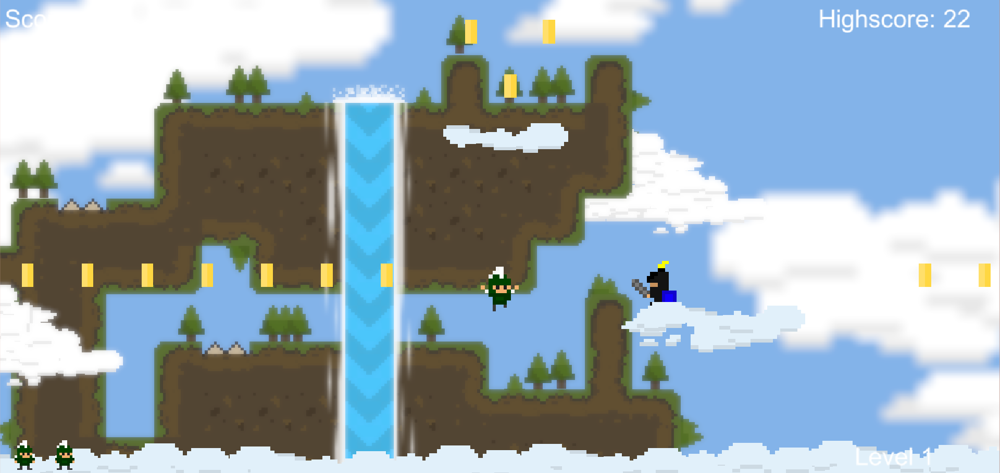
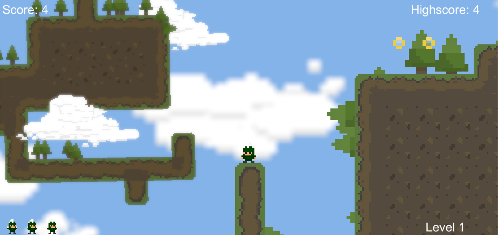
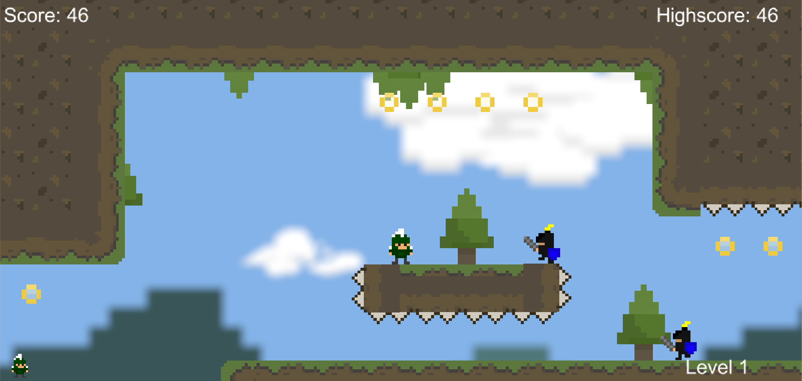

Created by Nirmit Bhatt
  Game Description:
Engage in an exciting adventure with Sparty by collecting coins, dodging enemies and going for the precious red rose!
Game Modifications:
Camera shake and triggering whenever sparty double jumps or stuns an enemy!
Apart from enemies being a threat to Sparty, different ground hazards and lava has been placed throughout the game.
Sparty can now also walk and jump on clouds as an exciting gameplay mechanic.
The overall aesthetics of the game has been significantly modified by including multiple parallax scrolling and waterfall!
The sound design for the main game and the "Game Over" screen has been altered.